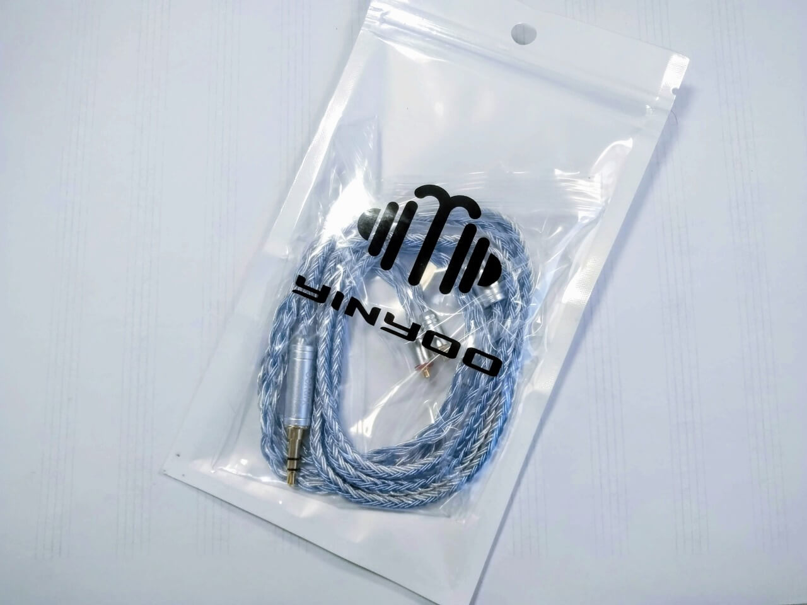
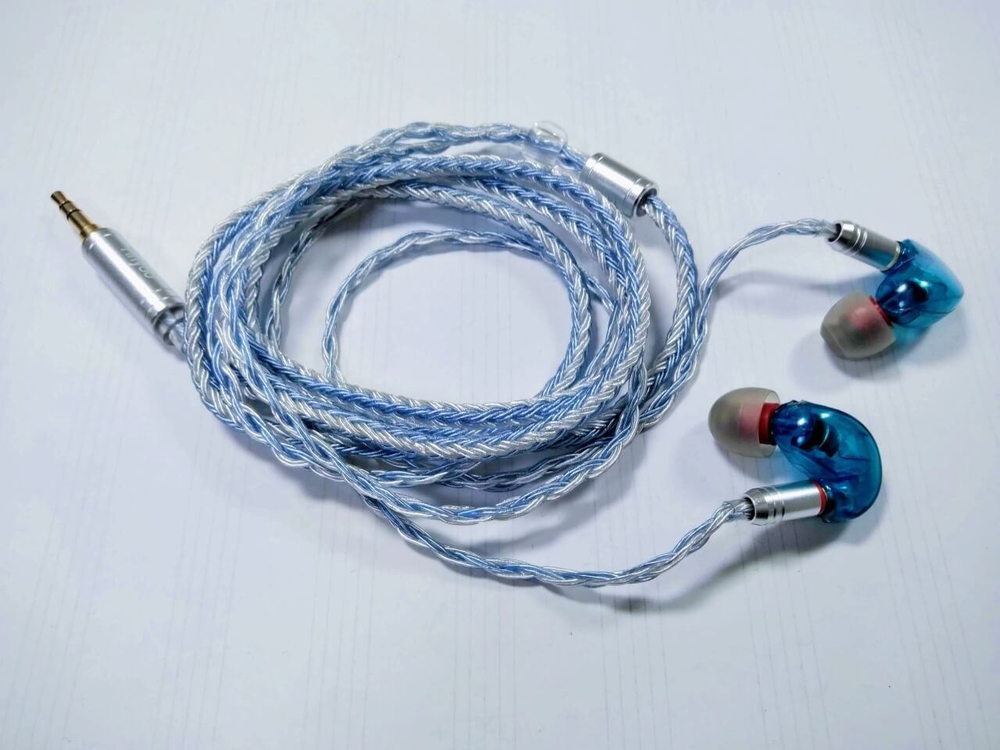

SE215のリケーブルにはYinyooのYYX4849がおすすめ

普段私はイヤホンに、SHUREのSE215というイヤホンをかれこれ5年愛用しているのですが、ここ１年ほど右耳の耳掛け部分が断線しかかっていて、とても煩わしかったのです。
SE215を購入した当初からリケーブルというものは気になっていたのですが、純正のケーブルに特に不満はなく交換する理由もなかったので、断線するまで使い込んでしまいました。
とりあえず、イヤホンの断線をなんとかするのが第一の目的で、ついでに音質も少し良くなればいいな、くらいの気持ちで買いました。
ケーブル選び
SE215に対応するのは「mmcxコネクタ」のある物で、これをAmazonで検索してみると…600円で買えるものから10000円以上するものまで当にピンキリです。
現状のSHUREの純正ケーブルより音質が悪くなるのは嫌で、安いものを買って地雷を踏むのもあれなので、3000円のYinyooのYYX4849を選びました。

mmcx ケーブルには16芯の銀メッキOFC線を使用することで、低域はより深みを増し、 中高域は更なる解像感を獲得します。また、帯域が広がる上に、迫力が増してきます。正確な定位感と自然で表情豊かなサウンドを可能にし、クロストークを抑制し微細な音までリアルに表現できます。 YYX4849 mmcx ケーブル 3.5mm ストレート 銀メッキケーブル mmcx イヤホン ケーブル shure ケーブル 16芯 mmcx ケーブル 3.5mm ケーブル (mmcx・3.5ｍｍプラグ)
SE215speの青色と合わせると、ケーブルと色がお揃いになってかわいいです。
総評
音質
音質については、イヤホンは1万円、DAPは2万円ちょいのもので十分満足できる、という俄な耳の持ち主が言うことなのでほぼ参考にならないと思いますが。
リケーブルによる音質の向上は今まで懐疑的な姿勢だったのですが、音質・情報量とも向上しました。イヤーピースのSpinFitで中高音域はよりクリアになっていたのですが、さらに明瞭になりました。
SHUREはもともとウォームな音ですが、その傾向は少し弱まってベールが1枚剥がれる感じ？長時間聴いても聞き疲れせず、打ち込みでも生音でも両方いけます。
取り回し
ケーブルが柔らかく癖もつかないので取り回しがいいです。この点だけで、今まで純正ケーブルを使い続けたことを後悔してしまいました。
純正ケーブルはワイヤーによって耳掛け部分にフィットするようになっているのですが、このワイヤーが2年ほどで折れてしまい、引っこ抜いていました。その反面、このケーブルはワイヤーがなくても収まりが良きです。
欲を言えばプラグの形状がL字だと良かったかな…。イヤホンジャックに挿すと出っ張り部分が3cm弱あるので、なんかの拍子に引っかかったら、イヤホンジャックにプラグの先端を残したまま折れてしまいそうな、そんな恐怖感があります。これはわがままなので慣れるしかない。
まとめ
ケーブルのこととかにあまり詳しくなくて、SE215でリケーブルするなら、まずこのケーブルを選んでおけば間違いないです。オーディオに詳しい人でも十分満足できる品質なのではないでしょうか。たぶん。
あとは、今使っているSE215は実はシェルにひびが入っていて、接着剤で塗り固めながらだましだまし使っているので、これがいつまで保つか気がかりです。またおいおい考えなければ…